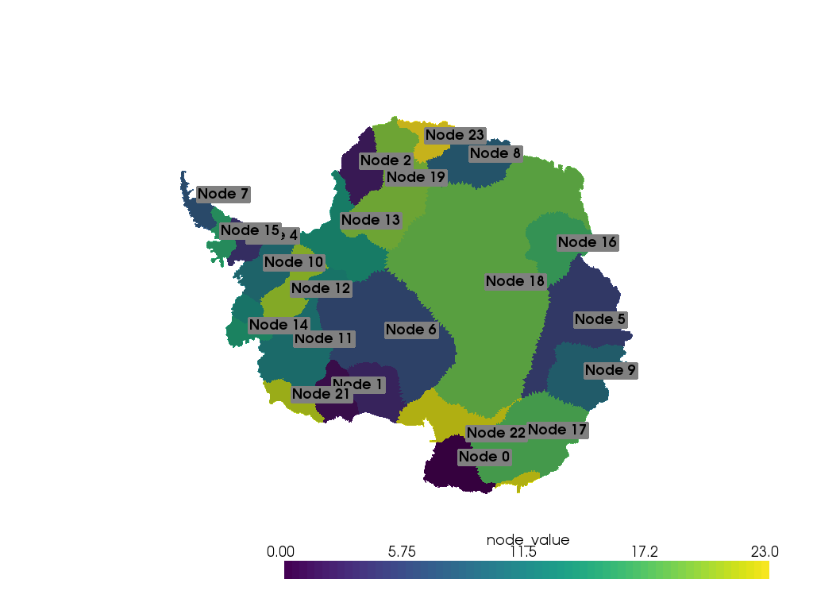
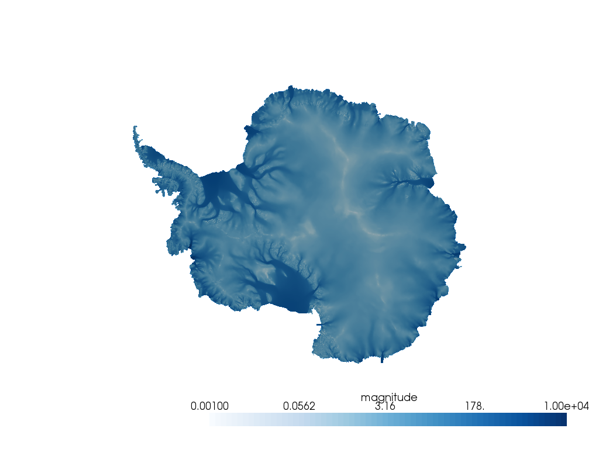
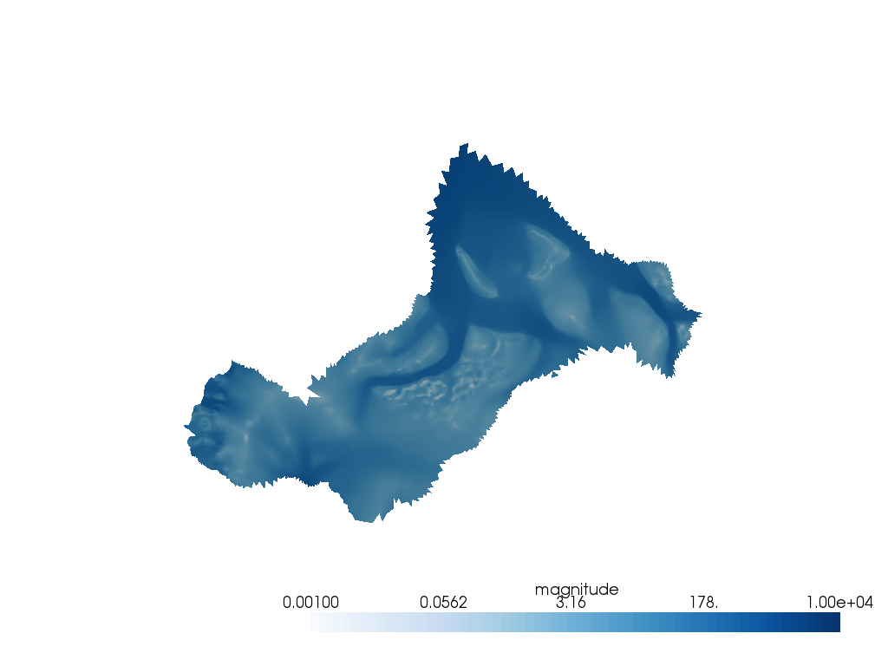
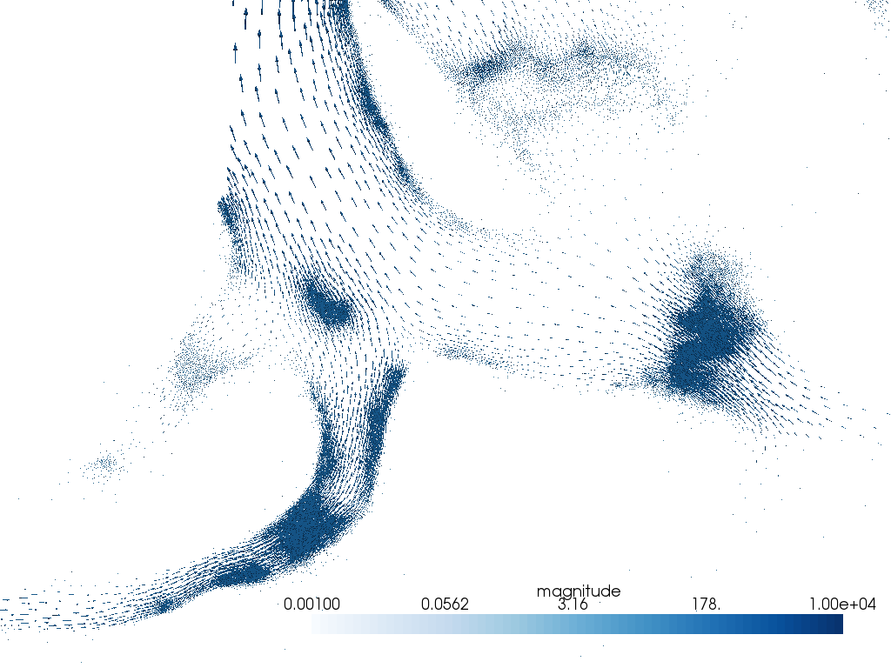
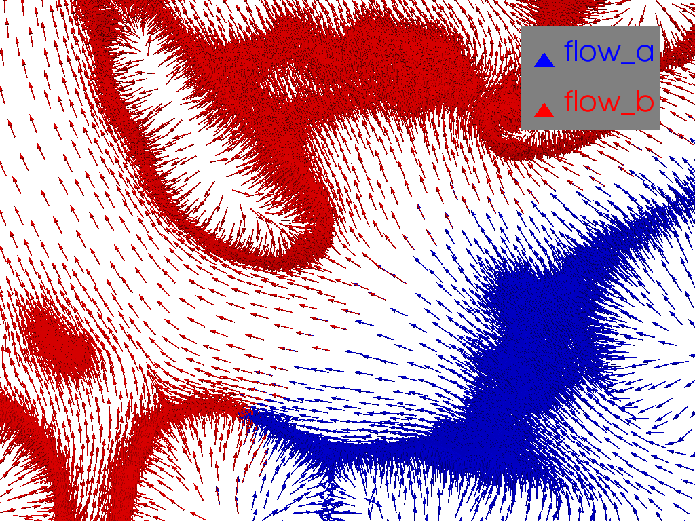
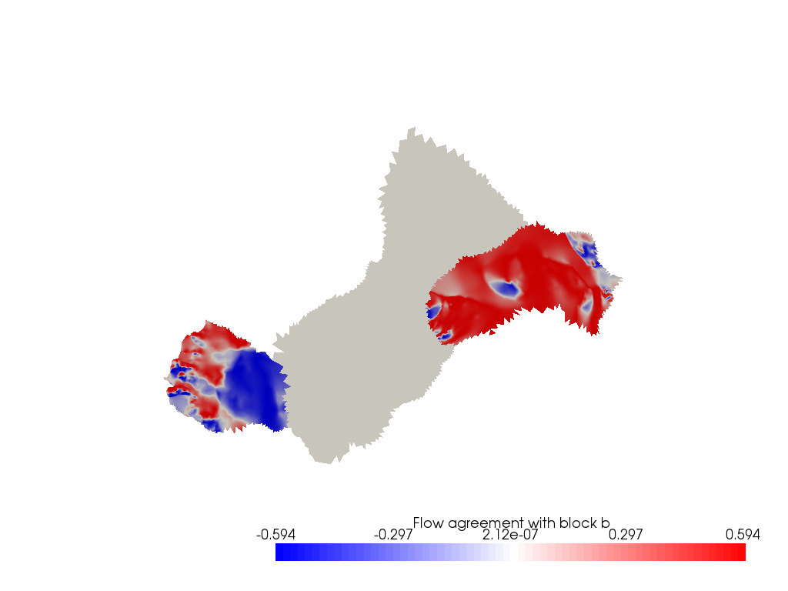
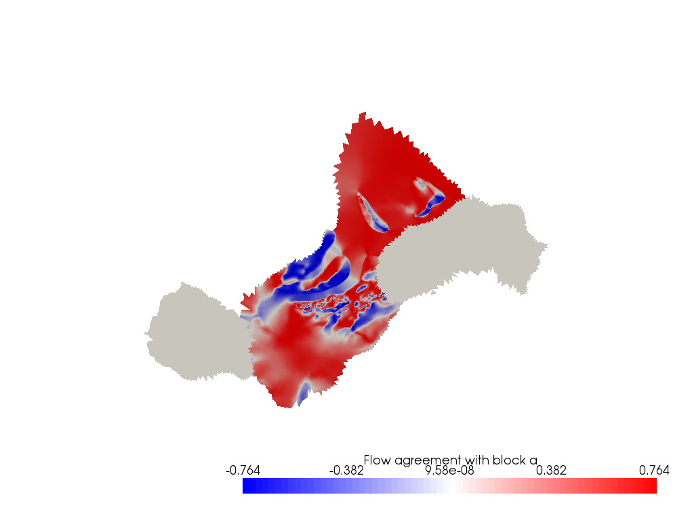

Note
Click here to download the full example code
Compare Field Across Mesh Regions¶
Here is some velocity data from a glacier modelling simulation that is compared across nodes in the simulation. We have simplified the mesh to have the simulation node value already on the mesh.
This was originally posted to pyvista/pyvista-support#83.
The modeling results are courtesy of Urruty Benoit and are from the Elmer/Ice simulation software.
# sphinx_gallery_thumbnail_number = 2
import pyvista as pv
from pyvista import examples
import numpy as np
# Load the sample data
mesh = examples.download_antarctica_velocity()
mesh["magnitude"] = np.linalg.norm(mesh["ssavelocity"], axis=1)
mesh
| Header | Data Arrays | ||||||||||||||||||||||||||||||||||||||
|---|---|---|---|---|---|---|---|---|---|---|---|---|---|---|---|---|---|---|---|---|---|---|---|---|---|---|---|---|---|---|---|---|---|---|---|---|---|---|---|
|
|
Here is a helper to extract regions of the mesh based on the simulation node.
def extract_node(node):
idx = mesh["node_value"] == node
return mesh.extract_points(idx)
p = pv.Plotter()
p.add_mesh(mesh, scalars="node_value")
for node in np.unique(mesh["node_value"]):
loc = extract_node(node).center
p.add_point_labels(loc, ["Node {}".format(node)])
p.show(cpos="xy")

Out:
[(118637.09504000004, 48407.14021500014, 13210946.134298638),
(118637.09504000004, 48407.14021500014, 0.0),
(0.0, 1.0, 0.0)]
vel_dargs = dict(scalars="magnitude", clim=[1e-3, 1e4], cmap='Blues', log_scale=True)
mesh.plot(cpos="xy", **vel_dargs)

Out:
[(118637.09504000004, 48407.14021500014, 13210946.134298638),
(118637.09504000004, 48407.14021500014, 0.0),
(0.0, 1.0, 0.0)]
a = extract_node(12)
b = extract_node(20)
pl = pv.Plotter()
pl.add_mesh(a, **vel_dargs)
pl.add_mesh(b, **vel_dargs)
pl.show(cpos='xy')

Out:
[(-1204058.921875, 259736.90625, 3426819.6061837124),
(-1204058.921875, 259736.90625, 0.0),
(0.0, 1.0, 0.0)]
plot vectors without mesh
pl = pv.Plotter()
pl.add_mesh(a.glyph(orient="ssavelocity", factor=20), **vel_dargs)
pl.add_mesh(b.glyph(orient="ssavelocity", factor=20), **vel_dargs)
pl.camera_position = [(-1114684.6969340036, 293863.65389149904, 752186.603224546),
(-1114684.6969340036, 293863.65389149904, 0.0),
(0.0, 1.0, 0.0)]
pl.show()

Out:
[(-1114684.6969340036, 293863.65389149904, 752186.603224546),
(-1114684.6969340036, 293863.65389149904, 0.0),
(0.0, 1.0, 0.0)]
Compare directions. Normalize them so we can get a reasonable direction comparison.
flow_a = a.point_arrays['ssavelocity'].copy()
flow_a /= np.linalg.norm(flow_a, axis=1).reshape(-1, 1)
flow_b = b.point_arrays['ssavelocity'].copy()
flow_b /= np.linalg.norm(flow_b, axis=1).reshape(-1, 1)
# plot normalized vectors
pl = pv.Plotter()
pl.add_arrows(a.points, flow_a, mag=10000, color='b', label='flow_a')
pl.add_arrows(b.points, flow_b, mag=10000, color='r', label='flow_b')
pl.add_legend()
pl.camera_position = [(-1044239.3240694795, 354805.0268606294, 484178.24825854995),
(-1044239.3240694795, 354805.0268606294, 0.0),
(0.0, 1.0, 0.0)]
pl.show()

Out:
[(-1044239.3240694795, 354805.0268606294, 484178.24825854995),
(-1044239.3240694795, 354805.0268606294, 0.0),
(0.0, 1.0, 0.0)]
flow_a that agrees with the mean flow path of flow_b
agree = flow_a.dot(flow_b.mean(0))
pl = pv.Plotter()
pl.add_mesh(a, scalars=agree, cmap='bwr', stitle='Flow agreement with block b')
pl.add_mesh(b, color='w')
pl.show(cpos='xy')

Out:
[(-1204058.921875, 259736.90625, 3426819.6061837124),
(-1204058.921875, 259736.90625, 0.0),
(0.0, 1.0, 0.0)]
agree = flow_b.dot(flow_a.mean(0))
pl = pv.Plotter()
pl.add_mesh(a, color='w')
pl.add_mesh(b, scalars=agree, cmap='bwr', stitle='Flow agreement with block a')
pl.show(cpos='xy')

Out:
[(-1204058.921875, 259736.90625, 3426819.6061837124),
(-1204058.921875, 259736.90625, 0.0),
(0.0, 1.0, 0.0)]
Total running time of the script: ( 0 minutes 20.333 seconds)